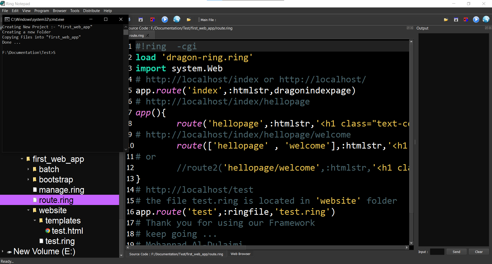

Welcome to the "Dragon-Ring" Web Framework Documentation.
The Framework's Files Structure :-

How to install ?
Click here To install
What Is New:-
Beta Version 1.2
1. Dragon-Ring Management System had been Enhanced:-
1-A. Add the ability to import Dragon-Ring extentions by using :-
importlib(cLibName) .
1-B. Add the ability to include 'vendor/css' , 'vendor/js' files automatically by using :-
include_vendor() function.
2. Dragon-Ring comes with many useful functions:-
2-A. request_method() ---> 'POST','GET'
it returns request method , also you can use request_method Variable.
if request_method() = 'POST' dring{html('POST Method')} ok
2-B. Upload a Files Using uploadfile(cInput,CButton) function
Note:- cInput,CButton write them with its`s Selectors as in css code Has(#) For id
or Dot(.) For classes.
2-C. Now You Can write the Route code and identifying The type of route without a String So :-
app{ Route('Index',Ringfile,'index.ring') }
/* Or */ app{ Route('Index',Ringfunc,'index()') }
/* Or */ app{ Route('Index',htmlstr,'The Index Page') }
/* Or */ app{ Route('Index',htmlfile,'index.html') }
2-D. Functions Can be used only inside dring object:-
2-D-1.Header(String_html_code)---> returns an html code and embed it into header of page.
2-D-2.SetTitle(String Title)---> embed a Title to page header.
2-D-3.SetIcon(image_src)--> to set icon for the page.
2-D-4.Css(cSelector,Css_Code)---> embed css code to the heaader of the page.
3. Add the { Route3() Route4() Route5() Route6() } Functions for some reasons...
4. Add Sqlite Database Extention.
5. Add Sqlite to Documentation.
6. Add Postgre ,mysql classes.
7. Now When You Create a route for a ring file without creaating the file
the system will generate it for you.
Note:- This Framework is based on the 'weblib' So you will find it is very easy to use this framework :) .
alpha Version 1.0.4
1. Add the ability to create projects using command line . 2. Add PostGreSql database extention with many useful functions. 3. Cookies Errors fixed. 4. weblib tempates (better code). 5. Add route2 function . 6. Error 404 Page (better code to be faster). 7. Auto Error Avoiding during execute files (if any error occurred on page it will return error 404 page not found (during the executing) not on code error). 8. Made the Page executing more faster . 9. updating the bootstrap and J-Query files. 10. Showflash() function (better code). 11. Add Get_Flashed_Messages() function. 12. Add (dangerous) Class for Flash messages. 13. Add 'Working With PostgreSql' document. 14. Add Employees example. 15. Add Login&signup example.
alpha Version 1.0.2
1. Add manage.ring so that you can manage your project easily.
2. Add [run] command to control the server :-
* run:startserver
* run:stopserver
* run:restartserver
3. Add the ability to run the project from any path without Ring notepad
or Xampp or Apache [only for windows]